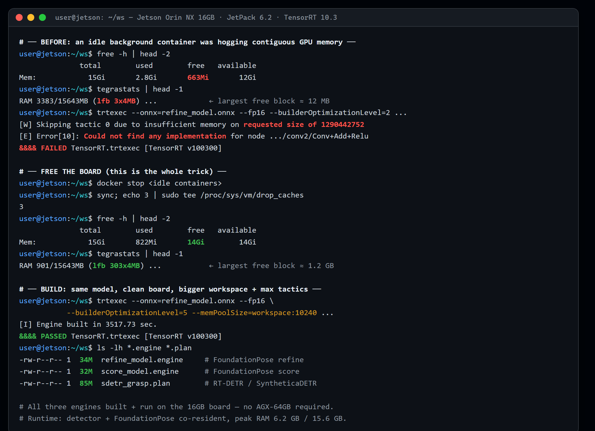
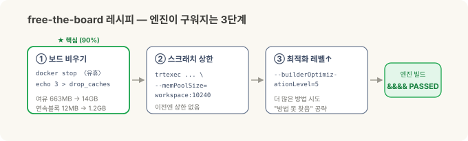
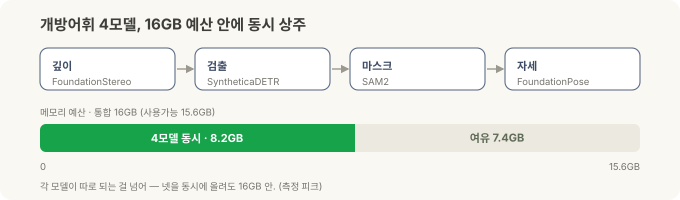

로봇의 뇌를 엣지에 올리기 — 정정편: 16GB로 안 된다던 그 결론, 뒤집었습니다¶
현장 노트 · '로봇의 뇌를 엣지에' 2부작의 정정편. 1부에선 맨 보드에 JetPack과 ROS 2를 올렸고, 2부에선 그 위에 Isaac ROS와 파운데이션 모델 파이프라인을 얹어 "학습 없이 새 부품을 잡는" 그림을 증명했습니다. 그리고 2부 끝에서 이렇게 적었죠 — "증명은 16GB로 끝났고, 실전용은 다음 칸 AGX Orin 64GB다." 이 글은 그 결론을 뒤집는 정정입니다.
2부를 쓰고 나서도 마음 한구석이 걸렸습니다. 무거운 두 모델(FoundationStereo·FoundationPose)이 16GB 엣지 컴퓨터에서 "걷는 속도"로 동작한 건, 하드웨어에 맞춰 미리 최적화해 굽는 가속 엔진(TensorRT 엔진)이 16GB에서 안 만들어졌기 때문이었습니다. 그래서 엔진 없는 느린 범용 경로로 동작했고, 저는 그걸 "16GB의 한계"로 적었어요.
그런데 포럼을 뒤지다 보니 같은 16GB 보드에서 되더라는 성공 사례가 있었습니다. 그래서 다시 붙었습니다. 결론부터 — 됩니다. 같은 Orin NX 16GB에서 FoundationPose 엔진이 구워지고, 노드가 처음 보는 물체의 6-DoF 자세를 라이브로 내놓습니다. 벽인 줄 알았던 건 하드웨어가 아니라 제가 못 본 메모리 도둑 하나였어요. 그리고 그 문이 열리자, 2부에서 함께 "64GB 필요"라고 적었던 나머지 — FoundationStereo까지 — 스택 전체가 같은 16GB 안으로 들어왔습니다.
(1·2부와 마찬가지로, 이건 특정 현장 배치가 아니라 일반적인 엣지 R&D 경험입니다.)
30초 요약¶
- 2부 결론("16GB는 증명, 실전은 64GB")은 과장이었다. 같은 16GB에서 FoundationPose 엔진이 빌드되고, 노드가 라이브로 동작한다.
- 진짜 범인은 "메모리 부족"이 아니라 "연속 메모리 조각남". 이전 실험에서 꺼두지 않은 유휴 컨테이너 하나가 메모리를 붙들고 있어서, 엔진을 굽는 순간 가장 큰 연속 여유 블록이 ~12MB밖에 없었다(빌드가 요청한 스크래치는 ~1.29GB). 그래서 최적화 시도가 전부 건너뛰기 되고 "빌드 불가"로 보였다.
- 레시피: 보드부터 비운다. 유휴 컨테이너를 끄고 페이지 캐시를 비우면 여유 메모리가 663MB → 14GB, 가장 큰 연속 블록이 ~12MB → ~1.2GB로 돌아온다. 여기에 워크스페이스 상한(
--memPoolSize)과 최적화 레벨 상향을 얹으면 엔진이 구워진다. - 결과: 피크 ~6.2GB / 16GB. 엔진 빌드 + 노드 라이브 6-DoF가, 검출 앞단까지 함께 올려도 9GB 넘게 여유를 두고 16GB 안에 들어온다. 16GB의 벽은 엔진을 굽는 순간에만 있었지, 실행에는 없었다.
- FoundationPose만이 아니다 — 스택 전체가 16GB에서 동작한다. 마지막 하나 FoundationStereo까지 뚫었고(해상도↓ + FP32), 검출 → 마스크 → 자세 4모델을 동시에 올려도 피크 8.2GB / 16GB로 들어온다.
- 교훈: "엔진을 못 굽는다"와 "못 실행한다"는 다른 말이다. 그리고 하드웨어를 탓하기 전에 뭐가 메모리를 먹고 있는지 먼저 보라.
2부에서 내가 적은 것 — 그리고 왜 걸렸나¶
2부의 하드웨어 결론은 이랬습니다.
개념은 16GB 엣지 컴퓨터로 증명이 끝났다. 무거운 모델은 걷는 속도지만, 실전에서 한 대로 제 속도를 내려면 다음 칸 AGX Orin 64GB다.
근거도 적었습니다 — 젯슨은 CPU와 GPU가 메모리를 함께 씁니다(통합 메모리, 여기선 다 합쳐 16GB). 큰 모델을 최고 속도로 실행하려면 먼저 가속 엔진으로 구워야 하는데, 이 굽는 과정이 순간적으로 메모리를 크게 먹어서 작은 엣지 컴퓨터가 그 고비를 못 넘는다고요.
여기까지는 맞았습니다. 굽는 순간이 고비인 것도, 통합 메모리가 좁은 것도. 틀린 건 "그래서 16GB로는 불가능하다"는 결론이었어요. 고비의 원인을 하드웨어 용량으로만 봤지, 그 16GB가 그 순간 실제로 얼마나 비어 있었는지는 안 봤거든요.
다시 붙어서 본 것 — 진짜 범인은 메모리 도둑¶
엔진 빌드 로그를 다시 열어 보니 실패가 아주 구체적이었습니다.
[W] Skipping tactic 0 due to insufficient memory on requested size of 1290442752
[E] Error[10]: Could not find any implementation for node .../conv2/Conv + Add + Relu
&&&& FAILED
1290442752는 약 1.29GB. 최적화 도구가 그 연산을 빠르게 만들 방법(tactic)에 그만한 작업용 메모리(scratch)를 요청했는데 모자라 건너뛰고, 결국 쓸 수 있는 방법을 하나도 못 찾아 실패한 겁니다. 용량 자체는 16GB인데, 왜?
살아 있는 메모리 상태를 봤더니 답이 나왔습니다.
- 시작할 땐 13GB가 비어 있었는데, 빌드가 도는 중에는 GPU가 쓸 수 있는 여유가 140MB뿐이었어요.
- 게다가 젯슨의
tegrastats가 보여주는 가장 큰 연속(contiguous) 여유 블록(lfb)이 겨우 3×4MB(~12MB). 굽는 도구는 그만한 큰 스크래치(로그상 ~1.29GB)를 붙여서 잡아야 하는데, 12MB 조각으로는 어림없었죠. 총량이 아니라 연속으로 붙은 블록이 없어서 막힌 겁니다.
범인은 곧 드러났습니다. 이전 실험에서 꺼두는 걸 깜빡한 컨테이너 하나가 39시간 동안 떠서 약 4GB를 붙들고 있었어요. 그게 메모리를 잘게 조각내면서, 여섯 번의 빌드 시도가 전부 같은 지점에서 같은 이유로 죽었던 겁니다. 하드웨어 벽이 아니라, 제가 안 치운 메모리 도둑이었죠.

실제 터미널: BEFORE(free 663MB · lfb 3×4MB · requested 1.29GB → &&&& FAILED) → 보드 비우기(free 14GB · lfb 303×4MB) → BUILD(workspace:10240 + optLevel=5 → &&&& PASSED). refine 34M · score 32M · 검출기(RT-DETR/SyntheticaDETR) 85M — 세 엔진이 모두 이 16GB 보드에서 나온다.
레시피 — 보드부터 비운다¶
정리하면 세 단계입니다. 첫 단계가 90%예요.
- 보드를 비운다 (이게 핵심). 유휴 컨테이너를 끄고, 페이지 캐시를 비운다.
→ 여유 663MB → 14GB, 가장 큰 연속 블록 3×4MB → 303×4MB(~1.2GB). 빌드 전에
docker stop <idle containers> sync; echo 3 | sudo tee /proc/sys/vm/drop_cachestegrastats의lfb가 크고free -h가 12GB 넘는지 꼭 확인하세요. - 작업용 메모리 상한을 준다. 굽는 도구에 넉넉한 스크래치를 명시한다.
이전 실패한 시도는 이 상한을 아예 안 줬습니다.
trtexec --onnx=refine_model.onnx --fp16 \ --builderOptimizationLevel=5 \ --memPoolSize=workspace:10240 # 10GB 스크래치 - 최적화 레벨을 올린다.
--builderOptimizationLevel=5(최대). 더 많은 방법을 시도하니 "쓸 방법을 못 찾음"을 정면으로 공략합니다. 이전엔 낮은 레벨이었어요.

이 조합으로 엔진이 구워졌습니다. FoundationPose의 두 조각(refine·score)이 각각 제대로 된 엔진 파일로 나왔고, "쓸 방법을 못 찾음" 에러는 완전히 사라졌어요.
그래서 무엇이 되나 — 엔진 빌드 + 노드 라이브¶
엔진이 구워지면 그다음은 술술 풀립니다.
- FoundationPose 노드가 라이브로 동작합니다. 카메라 입력을 받아 처음 보는 물체의 6-DoF 자세를 프레임마다 내놓아요. 미리 구운 엔진을 얹으니, 2부에서 겪은 "굽느라 메모리가 터지는" 고비 자체가 없습니다.
- 피크 메모리 ~6.2GB / 16GB (검출 앞단까지 함께). 9GB 넘게 남습니다. 즉 16GB의 벽은 "엔진을 굽는 순간"에만 있었지, 실행에는 처음부터 없었어요. 이게 이 글의 한 줄 요약입니다 — 엔진을 못 굽는다 ≠ 못 실행한다.
- 물체가 "어디 있는지" 찾아 주는 검출 앞단(닫힌집합형이든, 말로 지시하는 개방어휘형이든)까지 같은 보드에서 FoundationPose와 함께 올라옵니다 — 위 캡처의 엔진 셋이 그것(피크 ~6.2GB). 검출기 종류별 깊은 얘기는 다음 글감으로.
속도는 여전히 "걷는 속도"입니다 — 무거운 트랜스포머라 프레임당 몇 초. 하지만 2부에서도 말했듯, 픽(집기) 한 번이 몇 초 걸려도 되는 일이라면 문제될 게 없어요. 달라진 건 "16GB에선 이것도 못 한다"가 아니라 "16GB로도 제 경로(엔진)로 동작한다"는 사실입니다.
그리고 나머지 전부 — 스택 전체가 16GB에서 동작합니다¶
문 하나가 열리자 나머지 조각도 차례로 넘어갔습니다. 2부에서 FoundationPose와 함께 "64GB 필요"라고 적었던 다른 무거운 모델 FoundationStereo(스테레오 영상 → 깊이)까지요.
이건 솔직히 한 겹 더 미묘한 이야기입니다. FoundationStereo는 보드를 비워도 처음엔 안 구워졌어요. 로그를 보니 이번엔 진짜로 용량이 모자랐습니다 — 한 연산이 한 덩어리로 ~7.4GB의 연속 스크래치를 요구했는데, 이건 아까 같은 "조각남"이 아니라 16GB로는 정말 벅찬 크기였죠. 즉 두 종류의 16GB 벽이 있었던 겁니다. FoundationPose는 조각남(청소로 해결), FoundationStereo는 진짜 용량 고비.
이번엔 청소가 아니라 입력 크기와 정밀도로 넘었습니다.
- 해상도를 낮춘다. 480×640 → 288×480(NVIDIA가 젯슨용으로 권장하는 크기). 그 순간 ~7.4GB 요청이 ~187MB로 폭삭 줄었어요.
- FP16 대신 FP32로. 이 모델은 문서상 FP16 변환이 막혀 있어서, 오히려 FP32가 정답이었습니다.
- 빌드 후 벤치마크 단계를 건너뛴다(
--skipInference) — 엔진만 굽고 저장.
결과: 258MB 엔진, 약 2시간 빌드, 실행 프레임당 ~1.97초 @ 피크 5.95GB — 엔진 없는 느린 경로(~9.8초)보다 5배 빠릅니다. 마지막 조각까지 16GB 안에서 제 경로로 동작한 거예요.
여기까지 오니 그림이 완성됐습니다. 깊이(FoundationStereo) · 검출(SyntheticaDETR) · 마스크(SAM2) · 자세(FoundationPose) — 거기에 ESS·cuMotion까지, 스택 전체가 이 한 보드에서 빌드되고 동작합니다.
그리고 진짜 궁금했던 숫자 — 넷을 동시에 올리면 16GB에 들어오나? 들어옵니다. 검출 → 마스크 → 자세로 이어지는 개방어휘 체인의 네 모델을 동시에 상주시켰을 때 피크가 8.2GB / 16GB, 7GB 넘게 남았어요(측정치). 각 조각이 따로 되는 걸 넘어, 함께 올려도 16GB 안이라는 뜻입니다.

솔직한 단서 두 개도 남깁니다.
- 말로 지시하는 개방어휘 검출기(예: Grounding DINO)는 16GB에 올라가고 함께 동작하기도 하는데, 지금 공개된 그 배포용 체크포인트는 상자를 잘 못 잡았습니다 — 보드가 아니라 모델(체크포인트)의 한계예요. 정해진 부품을 다루는 현장이라면 닫힌집합형(SyntheticaDETR)이 실전 정답이고, 개방어휘는 유연성용 옵션입니다.
- 마스크를 진짜 SAM2로 뽑든 상자를 사각형으로 쓰든 최종 자세는 ~1mm/~1° 차이뿐이었어요. 관심 영역만 대충 맞으면 뒷단(FoundationPose)이 깊이로 마무리하거든요.
왜 이 삽질이 값나가나¶
세 가지를 배웠습니다. 셋 다 다음에 또 걸릴 함정이에요.
- "엔진을 못 굽는다"와 "못 실행한다"는 다른 문제다. 굽기는 순간적으로 큰 연속 메모리를 요구하고, 실행은 그렇지 않습니다. 하나가 막혔다고 다른 하나까지 포기하면, 되는 걸 안 된다고 적게 됩니다(제가 2부에서 그랬죠).
- 하드웨어를 탓하기 전에 "지금 그 16GB가 실제로 얼마나 비어 있나"를 본다. 총량이 아니라 가장 큰 연속 블록(
tegrastats lfb)을요. 유휴 컨테이너·좀비 프로세스가 메모리를 조각내는 건 조용해서, 총량만 보면 절대 안 보입니다. - 포럼 성공 사례도 "내 이미지에서" 다시 확인한다. 남이 됐다고 내 환경에서 무조건 되는 건 아니고, 남이 막혔다고 내 환경에서 무조건 막히는 것도 아닙니다. 이 글 자체가 그 재확인의 결과예요 — 포럼에서 "된다"를 보고 붙어서, 내 보드에서도 되는 걸 확인한 또 하나의 성공 사례.
하드웨어 결론 — 다시 씁니다¶
2부의 하드웨어 표를 정정합니다.
| 엣지 컴퓨터 | 2부에서 적은 것 | 지금 |
|---|---|---|
| Orin NX 16GB (우리가 가진 것) | 증명용. 실전은 다음 칸 | ★ 비실시간(픽 한 번 몇 초) 실전까지 된다. 보드만 비우면 엔진 빌드+노드 라이브 |
| AGX Orin 64GB | 실전용, 정답 | 여유·실시간·풀해상도용. 필요할 때의 선택이지, "돌리려면 반드시"는 아님 |
- Orin NX 16GB (대략 $800~1,400) — 파이프라인이 동작한다를 넘어, 픽 한 번이 몇 초 걸려도 되는 비실시간 실전까지 감당합니다. 관건은 용량이 아니라 빌드 순간 보드를 비워 두는 운영이에요.
- AGX Orin 64GB ($1,999) — 실시간이 필요하거나, 풀해상도·풀속도 여유가 필요할 때. (FoundationStereo도 16GB에서 빌드됩니다 — 다만 해상도를 낮춰야 하고, 64GB면 그 제약이 풀려요.) "엔진을 굽고 실행하려면 반드시 64GB"는 이제 틀린 말입니다.
값싸게 '되는지'부터 증명하고 필요할 때 올라타는 것 — 2부에서 그렇게 적었죠. 이번엔 한 발 더 나갔습니다. 알고 보니 그 값싼 보드가 실전 문턱도 넘더라는 것, 그리고 그걸 막고 있던 게 하드웨어가 아니라 안 치운 메모리 도둑 하나였다는 것. 엣지 AI의 현실적인 사다리는 생각보다 한 칸 아래에서 시작합니다.
참고 — 그럼 최신 JetPack 7 / Isaac ROS 4.0으로 올리면 더 낫지 않나? Orin NX 16GB에선 권하지 않습니다. JetPack 7.2가 Orin NX를 지원하긴 하지만 Isaac ROS 4.0은 Thor(더 큰 보드) 우선이고, NVIDIA가 Orin NX 16GB에 권장하는 조합은 여전히 Isaac ROS 3.2 / JetPack 6.2예요. 게다가 4.0의 파운데이션 모델은 더 무거워서 16GB 굽기 고비가 완화되기는커녕 더 빡빡해지고, 검증 사례 대부분이 Thor에 몰려 있어 Orin NX 선례도 적습니다. 최신이 곧 정답은 아니고, 이 보드에선 검증된 3.2/6.2에 머무는 게 안전합니다.
정리¶
| 2부 | 지금(정정) | |
|---|---|---|
| 엔진 빌드(16GB) | 안 됨 → 64GB 필요 | ✅ 됨 — 보드 비우기 + 워크스페이스 상한 + 레벨 상향 |
| 노드 라이브(16GB) | (엔진 없이 걷는 속도) | ✅ 6-DoF 라이브, 피크 ~6.2GB(검출기 함께) |
| 스택 전체(16GB) | (FoundationPose만 봤음) | ✅ 깊이·검출·마스크·자세 전부 빌드+구동, 4모델 동시 8.2GB |
| 진짜 원인 | "통합 메모리가 좁다" | 유휴 컨테이너가 연속 메모리를 조각냄(총량 아님) |
| 하드웨어 | 증명 16GB / 실전 64GB | 비실시간 실전도 16GB, 64GB는 여유·실시간용 |
기억할 한 가지: 벽인 줄 알았던 게 벽이 아닐 때가 있습니다. 이번 건 하드웨어 용량이 아니라 빌드 순간의 연속 메모리였고, 그건 보드를 비우는 것만으로 풀렸어요. "엔진을 못 굽는다"를 "이 하드웨어론 안 된다"로 옮겨 적기 전에, tegrastats의 연속 블록 한 줄을 먼저 보는 것 — 그게 이번 삽질이 남긴 값입니다.